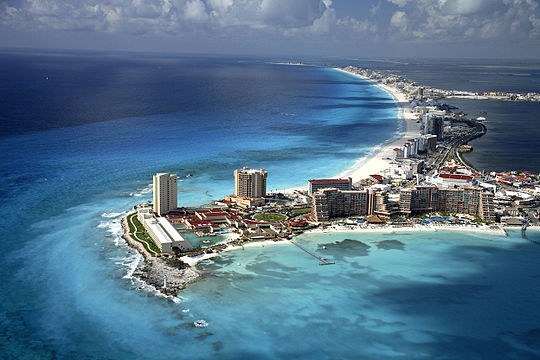
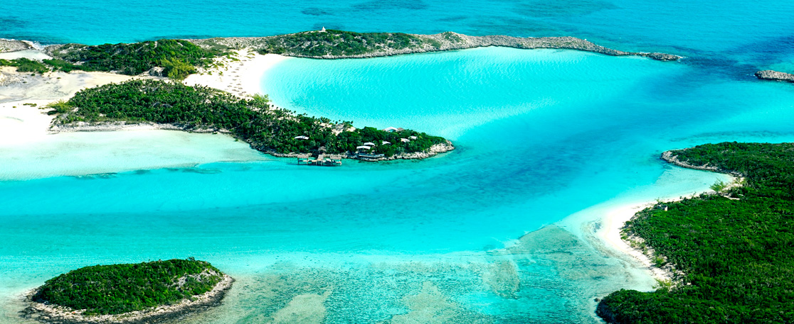

Cancun:Cancun, is a Mexican city on the Yucatan Peninsula bordering the Caribbean Sea, is known for its beaches, numerous resorts and nightlife. It’s composed of 2 distinct areas: the more traditional downtown area, El Centro, and Zona Hotelera, a long, beachfront strip of high-rise hotels, shops and restaurants.
Exumas Bahamas: The Exumas are an archipelago of 365 cays and islands, beginning just 35 miles southeast of Nassau. Once called Yumey and Suma (names of Amer-Indian origin), the islands have gone through many changes over the years. Today, they’re divided into three major areas—Great Exuma, Little Exuma and The Exuma Cays. Each offers its own unique Bahamian experience. Great Exuma and Little Exuma are known for their laid-back surroundings, while The Exuma Cays act as a playground for the rich and famous, boasting numerous private homes, luxury resorts and beachside condos. The Exumas are also rich in history, as they were settled by British Loyalists with their slaves following the American Revolution.
 